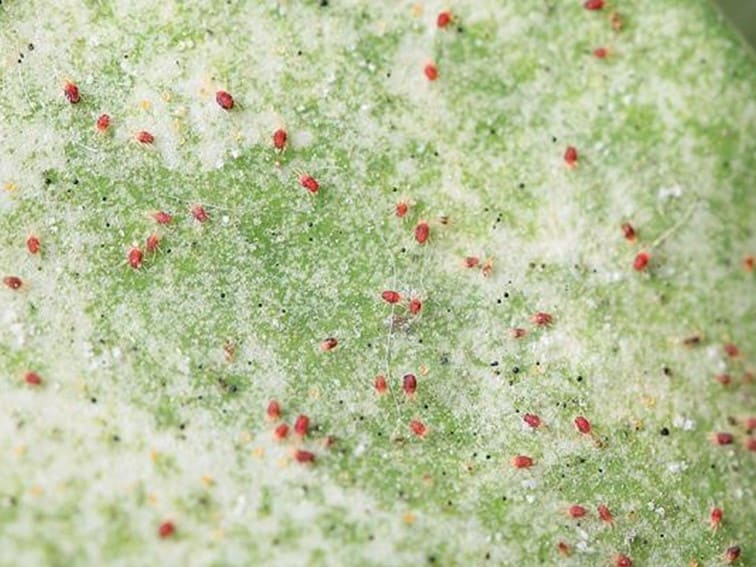

Oh！這些常見的可惡害蟲
蚜蟲喜歡溫暖多濕的環境，繁殖力很強，一年可繁殖二十多代，甚至能透過風力傳播給其他植物。蚜蟲在高溫多濕及不通風情況下最容易發生，除了為植物帶來直接傷害外，也會導致煤病產生。

細菌性病害是由細菌病菌引起的病害，常發生在高溫多濕的環境裡，細菌經植物的傷口侵入組織，分泌毒素，之後向周圍擴散，最後引起植株死亡，此病害會隨雨水或昆蟲，散播至其他植物。

紅蜘蛛遇到密植環境或通風不良很容易猖獗。紅蜘蛛其實不是蜘蛛，而是葉蟎，因成蟎是紅色，外觀像蜘蛛，故名。植株以中、老葉容易受害，如果遇到溫暖無雨的乾旱季節，將更嚴重。